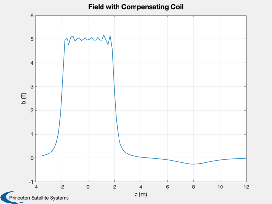

Contents
Create a compensating coil for the DFD dipole
Uses AWG3 wire. The field is computed to see the effect of the compensating coils on the central field of the solenoid.
See also: ConcentricCoils
%-------------------------------------------------------------------------- % Copyright (c) 2017 Princeton Satellite Systems, Inc. % All Rights Reserved. %-------------------------------------------------------------------------- % The DFD dipole bAxial = 5; % T rCC = 2; % Radius of compensating coil zCC = 8; % Location of compensating coil % Coil locations zC = [-1.75 -1.25 -0.75 -0.25 0.25 0.75 1.25 1.75]; % Coil radii r = EllipsoidalSolenoid( 0.35, 0.5, zC ); % Radii % https://en.wikipedia.org/wiki/American_wire_gauge % Gauge: AWG3, area is 26.7 mm2 iAWG3 = 115; % Maximum capacity of wire (A) rho = 0.6465e-3; % ohms/m linear = 8.9*26.7*1e-2; % linear density copper (g/cm) % superconductors - should specify which material at what temp iHTS = 500; linearHTS = 0.085; % g/cm % Compute the coil currents [~, i] = ConcentricCoils( zC, bAxial, r ) % Compute the dipoles and compensating coil mDFD = pi*sum(r.^2.*i); zC = [zC zCC]; % Z location r = [r rCC]; % Radii z = linspace(2*zC(1),1.5*zC(end)); iCC = mDFD/(pi*rCC^2); n = iCC/iAWG3; l = 2*pi*rCC*n; % total length of wire power = iAWG3^2*rho*l; mass = linear*l*0.1; % mass of copper (kg) massHTS = iCC/iHTS*2*pi*rCC*linearHTS*0.1 k = 1; s = {}; s{k,1} = 'Mass'; s{k,2}= sprintf('%12.2f kg',mass); k = k + 1; s{k,1} = 'Power consumption'; s{k,2}= sprintf('%12.2f kW',power/1000); k = k + 1; s{k,1} = 'Current'; s{k,2}= sprintf('%12.2f MA',iCC/1e6); k = k + 1; s{k,1} = 'Number of turns'; s{k,2}= sprintf('%12.0f',n); k = k + 1; s{k,1} = 'Radius'; s{k,2}= sprintf('%12.2f m',rCC); k = k + 1; s{k,1} = 'DFD B Field'; s{k,2}= sprintf('%12.2f T',bAxial); DisplayLatexTable(s) i = [i -iCC]; b = Field(i,r,zC,z); Plot2D(z,b,'z (m)', 'b (T)', 'Field with Compensating Coil');
i =
Columns 1 through 6
2.1318e+06 2.1648e+06 2.0964e+06 2.1198e+06 2.1198e+06 2.0964e+06
Columns 7 through 8
2.1648e+06 2.1318e+06
massHTS =
178.79
Mass 21731.80 kg
Power consumption 781.91 kW
Current 0.84 MA
Number of turns 7278
Radius 2.00 m
DFD B Field 5.00 T
Axial field computation
function b = Field( i, a, d, z ) mu0 = 4e-7*pi; a2 = a.^2; f = mu0*i.*a2/2; b = zeros(1,length(z)); for k = 1:length(d) b = b + f(k)./((z-d(k)).^2 + a2(k)).^1.5; end end %--------------------------------------